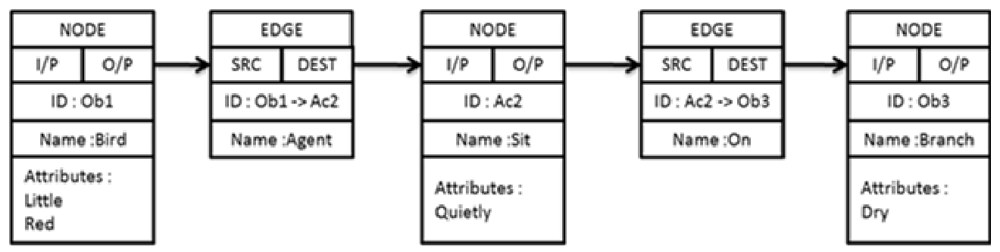
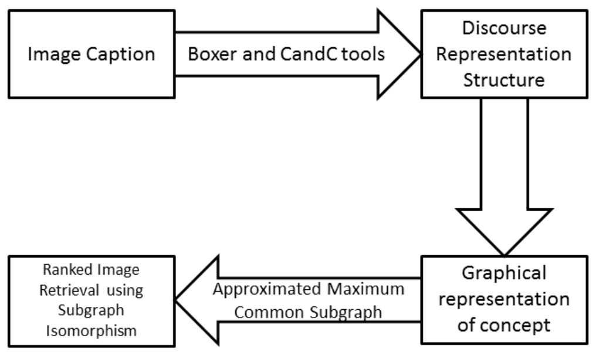
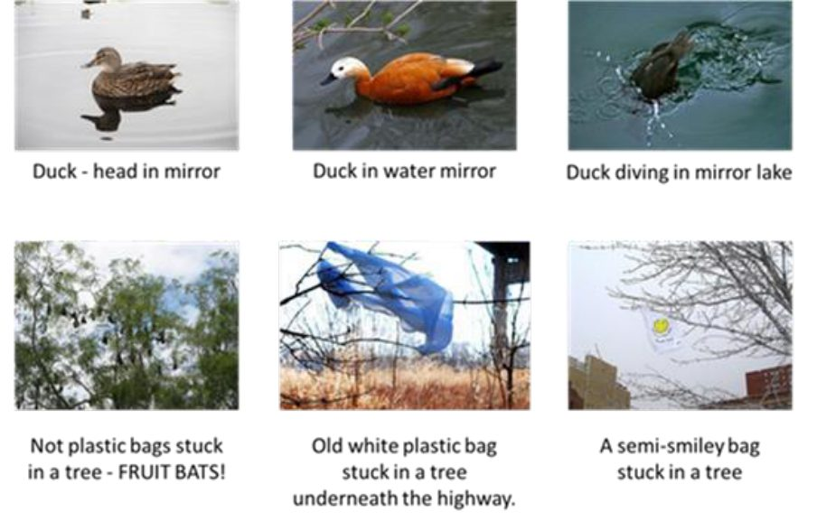

Finding similar photos by comparing the meaning graphs of their captions
Many photos on the web come with a short caption. If a caption captures what a picture is about, we can look for similar pictures by looking for similar captions. We turned captions into graphs of objects, their properties and the relations between them, and used those graphs to retrieve photos. The program never looks at the pictures themselves.
The idea
A picture is more than a list of objects. It also has properties, such as a little red bird and a dry branch, and relations, such as the bird sitting on the branch. So the representation has to keep the properties of objects and the relations between them, not just the nouns.
We read each caption with the C&C parser and Boxer, which write out a discourse representation structure: the things mentioned and the facts that connect them. Unlike in our earlier work on text classification, we kept only nouns, adjectives, verbs and the relations between them, because we found the rest of the grammatical information valueless for captions.
From caption to graph
Each noun becomes a node. Adjectives become attributes of the noun they describe. Each verb becomes its own node, joined to nouns by agent and patient edges, and adverbs become attributes of the verb. Words like "on" or "under" become edges between noun nodes. We kept the graph as close to a simple chain as possible, since that makes comparing graphs faster.

Comparing two captions
To compare two graphs, we again look for the largest shared part, the maximum common subgraph, with a faster approximate version. We score pairs of nodes by how similar their words are, using WordNet, a dictionary that arranges words in a tree of concepts. We add credit for shared attributes and for similar neighbours. The best non-overlapping pairs are kept, and the average of their scores is the similarity of the two captions.

We worked with a subset of the SBU Captioned Photo Dataset, limited to 12 objects (bag, ball, castle, chicken, computer, duck, elephant, laptop, keyboard, monitor, plate and shirt) because of limited computing resources. It held 6000 training captions and 900 test captions. For a test caption, the system returns the pictures whose captions are the most similar.
What human judges said
We asked 25 people to judge the results. Each saw 20 sets of pictures: a query picture and the top five pictures returned for it. They scored each returned picture from 0 (no similarity at all) to 4 (nearly the same objects and concept), looking at both the objects and the overall idea.
The scores fell steadily down the ranking, with average medians of 2.95, 2.55, 2.3, 1.95 and 1.55 for positions one to five, and 2.26 ± 0.748 over all five (Table I). We read this as ranking that goes along with human judgement. Two examples show what the system does well and badly. A duck query returned other ducks. A query showing fruit bats in a tree returned plastic bags in trees. The paper notes that the system favours concept over content here, and that negation needs better handling, and the bats caption itself begins "Not plastic bags".

What it does not do
Negation is the weakness the paper names. Our aim was to show that this representation makes sense to people, and we say that further studies are needed before it can compete with other contemporary techniques. We also propose adding image features and trying dependency-based graphs for speed.
Retrieval was only the test. The main goal was a graph model of what a caption means.
Sources
The figures and tables listed here are taken from the paper cited at the top of this page; the numbers quoted in the text come from the paper too.
- Figures: Fig. 3, Fig. 2, Fig. 4
- Tables: Table I: median score and standard deviation from the 25 judges for each of the five retrieved images in the 20 sets
How to cite the paper
Swarnendu Ghosh, N Das, T Gonçalves, P Quaresma (2016). Representing image captions as concept graphs using semantic information. International Conference on Advances in Computing, Communications and Informatics (ICACCI), pp. 162–167 · IEEE.